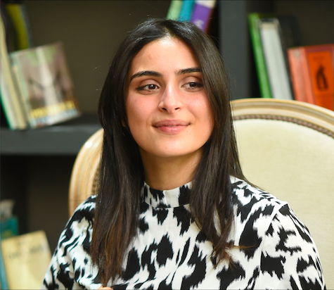
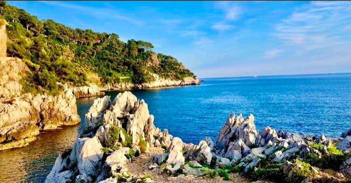
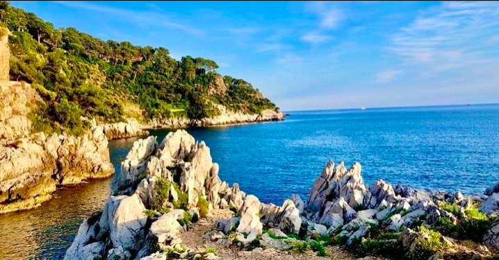
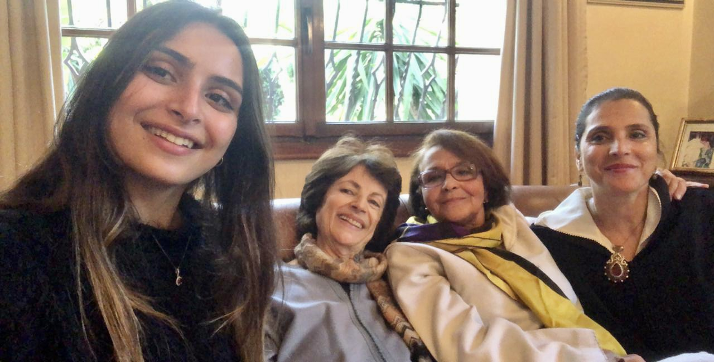
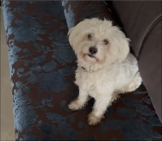
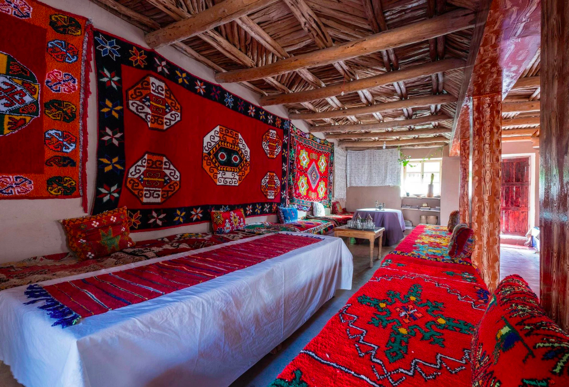
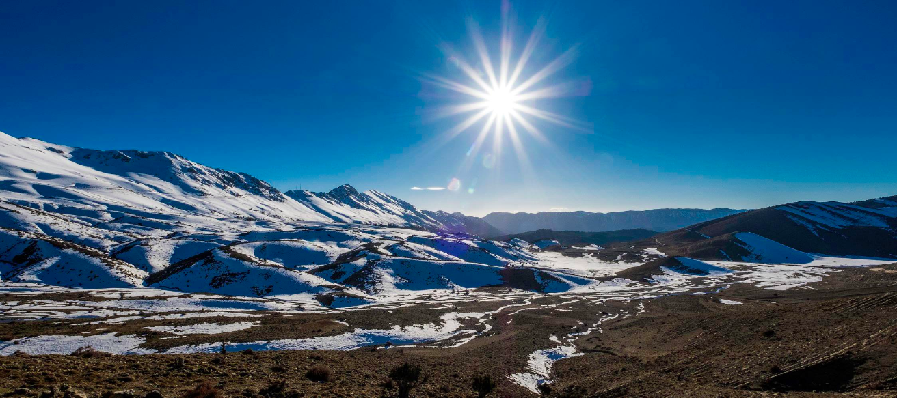
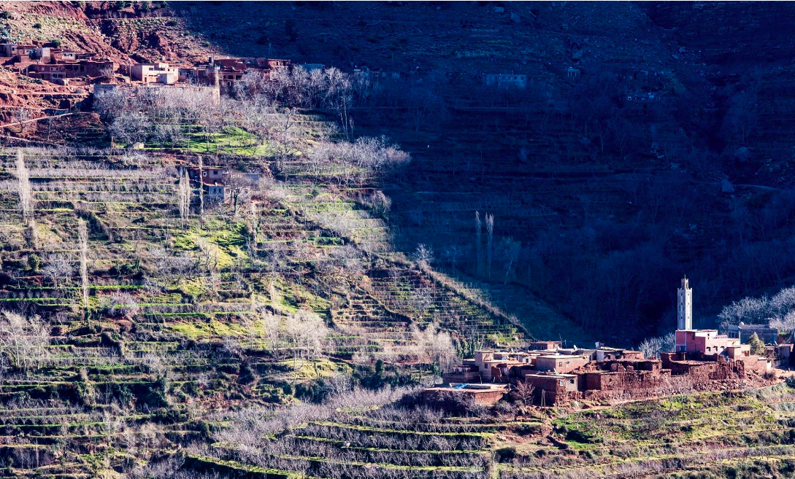
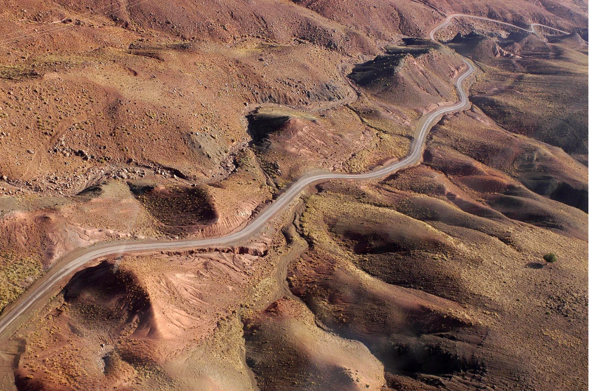
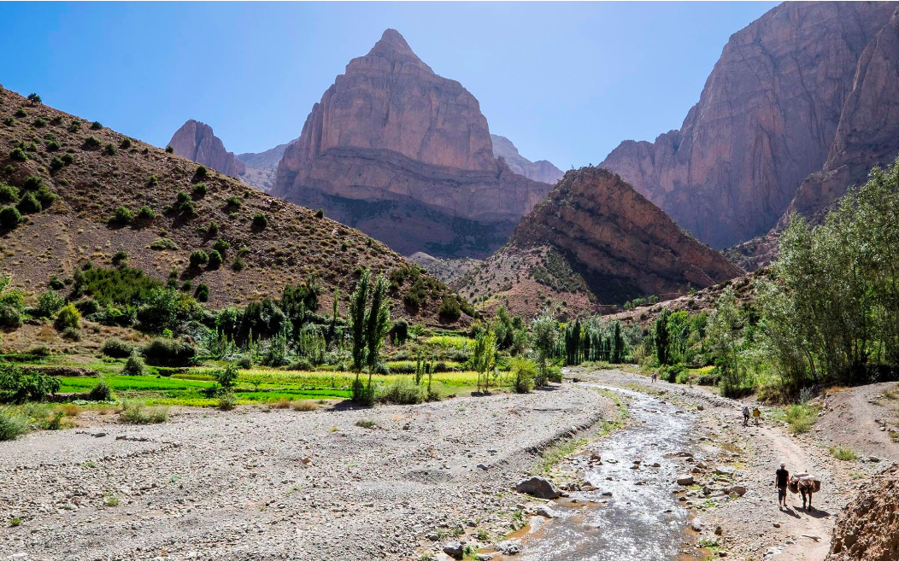

Hello I'm Ghita !🌺
I'm a 22yo moroccan girl. I'm basically the profile type who enjoys the little things in life... (you can check them out below 👇) Currently doing my MS in Audencia business school, I constantly look out for opportunities to better orient myself in what I love. Since my youngest age I am extremely focused on the audiovisual field and artistic professions, more specifically cinema🎞. Also, I now love coding 😅! .
Discover Le WagonTaking pictures 📸
To me, Photography is a fragment of time that will not come back, so I like to capture as much as I can ! It's all about the nature details. I am not so much into taking people but more landscapes and wildlife.
"La photographie est l'art de montrer de combien d'instants éphémères la vie est faite" M.PROUST


 

Spending time with my loved ones 👨👩👧👦
It goes without saying that my family is all I treasure the most. They are the shoulder I lean on when my world is falling appart, they are the ear that listens to me when I need to share what I need. They are the sun of my sky, my pillar and everything that I can and cannot describe... Bless them all!
My dogs 🐶
... But my dogs are just my everything. I have a female german shepherd called "Chica".

She's almost four years old and she's the sweetest, she has the wisdom of the older one :)
My other dog is a maltese called "Snow" also known as "Snowy". There he is !
About him he's two years and he is just overexcited all the time. A real warmachine ! he never stops ! A wise man said one day :
"A dog is the only creature on Earth that loves you more than it loves itself.". He was not so wise as I do love them more than myself 😅!
Cinema 🎞
Ever since I can remember, I have always been a film buff. Indeed, from my very young age, I was introduced to cinema without ever being able to really insert myself in and more attend it on the surface. Over my internships, I decided to make my dream a reality and make a small place in this field by attending to film festivals and reaching out to couples of production companies in Morocco. I got eager to go further and genuinely assert my potential by affecting the moroccan film industry. I also got to meet one of my favorite actors Simon Baker among others, during the 2019 Marrakech Film Festival. I have been so grateful for the whole experience and felt so emotional as I have been allowed as a film enthusiast to prove their worth makes you more unique. so many of these people brought me huge inspiration.


Reading and writing 📚📖
Reading books and writing essays have always been parts of my life. It has moved me in so many ways and inspired me to achieve my goals. I mostly read novels. But I'd say that my favorite book is Dostoïevski's "The White Nights". Ever since I have read this book, I decided to write. First it was left to be a compendium of disorganized emotions, but as I kept writing, I realized I had something to share, which motivated me to complete my project. Reading and writing are both so rewarding to me when I consider myself a work in progress.

Sightseeing my own country 🇲🇦
My Morocco ! This magical country borded by the Atlantic coast and the Mediterranean is above all an incredible contrast of landscapes, colors and smiles. I love to experience and capture each moments in each place whether it is a preserved nature spot or an ancestral rural one.
    